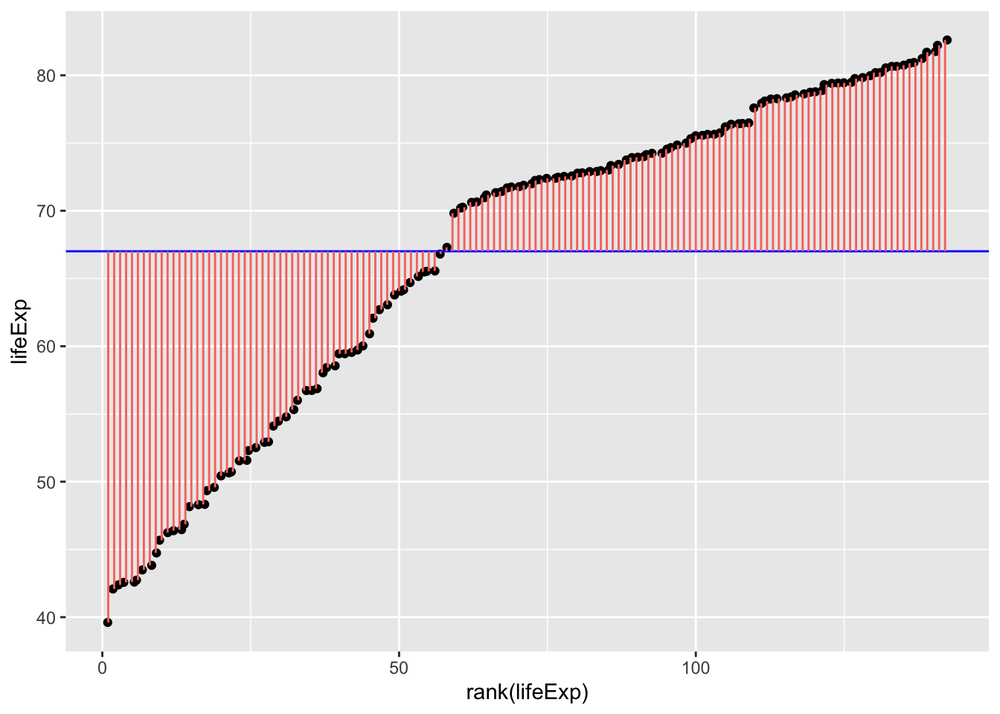

this_page = "glm"General Linear Models and Sum of Squares (R, Python)
Course Overview
Red means that the page does not exist yet
Orange means that the page is started
What are general linear models?
General linear models allow you to analyse data in which the dependent variable is continuous. For example, if you are analysing the height of a group of individuals, you might use one of the following analyses:
t-test, comparisons between two conditions e.g. are males taller than females?
regression, one or more predictors of a single outcome e.g. does foot size, weight etc. predict height? (Note that correlations are equivalent to a regression with a single predictor)
ANOVA, comparisons between 3 or more conditions or between multiple categorical factors, e.g. are there differences in height between sexes and nationalities?
Linear refers to the dependent variable being continuous.
General refers to the fact that the independent variables can both be continuous (e.g. regression) or categorical (e.g. t-test or ANOVA).
In general linear models all analyses involve creating a model, and capturing what is and isn’t explained by the model (i.e. the error of the model). All analyses in general linear models can be formulated as:
\[ Data = Model + Error \]
Data: The dependent variable in your analysis
Model: A model which predicts a phenomenon. This could be multiple independent variables.
Error: What data isn’t explained by the model.
Dummy vs. effect coding for categorical variables in a model
General Linear Models need numerical values for the predictors. As categorical variables (e.g. Sex) don’t have a numeric value by default, we have to substitute the categories with numbers:
- Effect coding can be used when you have a binary categorical variable, and you allocate one level 1 and the other -1. For example, you could allocate all females the score 1, and all non-female participants -1. A disadvantage of this approach is that it works best when you have binary categorical variable, but doesn’t work as well when you have 3 or more levels. For example, coding female, male and non-binary sex doesn’t work well with effect coding.
- Dummy coding involves allocating a 1 if someone is in a cateogory, and 0 if they are outside of the category. For example, you could allocate 1 to all your female participants, and 0 to all participants who aren’t female to a variable “sex_female”. An advantage of this approach is that you have flexibility to have more than 2 levels, such as having “sex_female”, “sex_male” and “sex_nonbinary” as variables that are all either 1 or 0.
Mean as the simplest model of data
If you want to estimate what someone’s life expectancy would be in 2007, you could look at the mean life expectancy using the gapminder data. In terms of how this corresponds to the above model:
\[ Data = Model + Error \]
\[ estimatedLifeExpectancy = mean(lifeExpectancy) + Error \]
library(gapminder)
# create a new data frame that only focuses on data from 2007
gapminder_2007 <- subset(
gapminder, # the data set
year == 2007
)
mean(gapminder_2007$lifeExp)[1] 67.00742# load the gapminder module and import the gapminder dataset
from gapminder import gapminder
# create a new data frame that only focuses on data from 2007
gapminder_2007 = gapminder.loc[gapminder['year'] == 2007]
gapminder_2007['lifeExp'].mean()67.00742253521126\[ estimatedLifeExpectancy = 67.01 + Error \]
Which could be visualised as:
library(ggplot2)
ggplot(
gapminder_2007, aes(x=rank(lifeExp), y=lifeExp)
) +
geom_jitter() +
geom_hline(yintercept = mean(gapminder_2007$lifeExp), color="blue") +
geom_segment(
aes(
xend = rank(lifeExp),
yend = mean(lifeExp),
color = "resid"
)
) +
theme(legend.position = "none")
gapminder_2007["lifeExp_rank"] = gapminder_2007["lifeExp"].rank()
fig, ax = plt.subplots(figsize =(7, 5))
#scatter plot for the dataset
plt.scatter(gapminder_2007["lifeExp_rank"], gapminder_2007["lifeExp"], color='black', s=10)
# only one line may be specified; full height
plt.axhline(y=gapminder_2007["lifeExp"].mean(), color='blue', ls='-')
plt.vlines(x=gapminder_2007["lifeExp_rank"],ymin=gapminder_2007["lifeExp"], ymax=gapminder_2007["lifeExp"].mean(), colors='red', lw=0.5)
# add title on the x-axis
plt.xlabel("rank(lifeExp)")
# add title on the y-axis
plt.ylabel("Life Expectancy")
plt.show()
In English, the above model and figure allow you to predict that anyone’s life expectancy will be 67 years. However, as you can also see, there’s a huge amount of error, i.e. variance in life expectancy that is not explained by the model. These errors can be squared and summed to give the sum of squares, a statistic of how much error there is around the model:
\[ SS = \sum(Y_i-\bar{Y})^2 \]
Which can be visualised as follows:
ggplot(
gapminder_2007,
aes(
x=rank(lifeExp),
# y is the square of the difference between each data point and the mean across all data poins. Once these are summed you will get the sum of squares.
y=(lifeExp-mean(lifeExp))^2
)
) +
geom_point() +
geom_segment(
aes(
xend = rank(lifeExp),
yend = 0,
color = "resid"
)
) +
theme(legend.position = "none")fig, ax = plt.subplots(figsize =(7, 5))
#scatter plot for the dataset
plt.scatter(gapminder_2007["lifeExp_rank"], (gapminder_2007["lifeExp"]-gapminder_2007["lifeExp"].mean())**2, color='black', s=10)
# vertical lines
plt.vlines(x=gapminder_2007["lifeExp_rank"],ymin=0, ymax=(gapminder_2007["lifeExp"]-gapminder_2007["lifeExp"].mean())**2, colors='red', lw=0.5)
# add title on the x-axis
plt.xlabel("rank(lifeExp)")
# add title on the y-axis
plt.ylabel("(Life Expectancy - mean(Life Expectancy))^2")
# show plot
plt.show()You can inspect fig. 1. and fig. 2. to see how much error is associated with each data point compared to the model (mean). Fig. 2. is positive because it is the distance of the data-point from the mean squared. If you added together all the squares (pink lines) in fig. 2. that would give you the sum of squares.
As you may have guessed, it is possible to have more precise models that have less error, and thus a smaller sum of squares. The sum of squares around the mean is also the total sum of squares, and the total variance. When we calculate the proportion of the variance that a model explains, we are comparing it to this variance around the mean.
Let’s explore those possibilities now in the following pages:
- t-tests for comparisons between two groups of participants or two conditions within participants
- one-way ANOVAs for comparisons between 2 or more groups of participants
- repeated-measures ANOVAs for comparisons between 2 or more groups of conditions within participants
- mixed-effect ANOVAs for analyses with at least 1 between-subject factor and 1 within-subject factor
- ANCOVAs for analyses in which you control for a covariate.